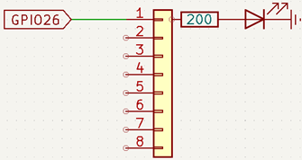
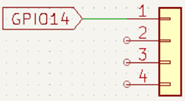
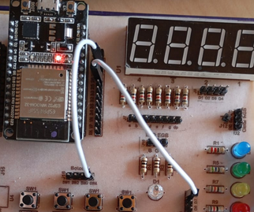

Objetivo. Aprender a leer el estado de un pulsador en una entrada digital. Encender y apagar un LED según el estado del pulsador.
Procedimiento.
-
Conectar un pulsador al pin GPIO14 del ESP32 y un LED al pin GPIO26.



- Abrir Thonny y crear un nuevo archivo con extensión .py.
- Configurar el pin del pulsador como entrada (Pin.IN) y el pin del LED como salida (Pin.OUT).
-
Implementar un bucle while True que verifique el estado del pulsador y encienda/apague el
LED en consecuencia.
import machine import time pulsador = machine.Pin(14, machine.Pin.IN) # Button pin led = machine.Pin(26, machine.Pin.OUT) # LED pin while True: # Al presionar el pullsador se lee su valor if pulsador.value() == 1: # Se ilumina el LED led.value(1) # Sigue iluminado el LED durante este tiempo time.sleep(0.5) else: # Se apaga el LED led.value(0)
Actividades sugeridas.
- Repetir el procedimiento con los 4 pulsadores del entrenador QMT-020.
- Modificar el código para encender dos LEDs con dos pulsadores diferentes.
- Modificar el código para que cada pulsador controle un LED independiente.
- Guardar el programa en el microcontrolador y ejecutarlo sin conexión al PC.